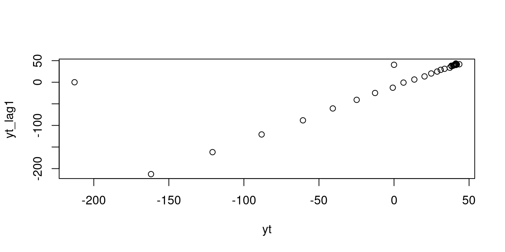
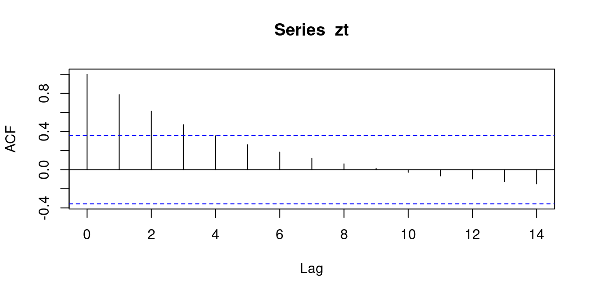
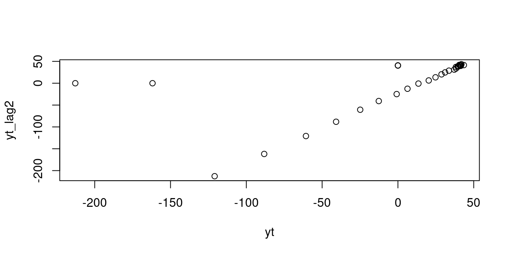
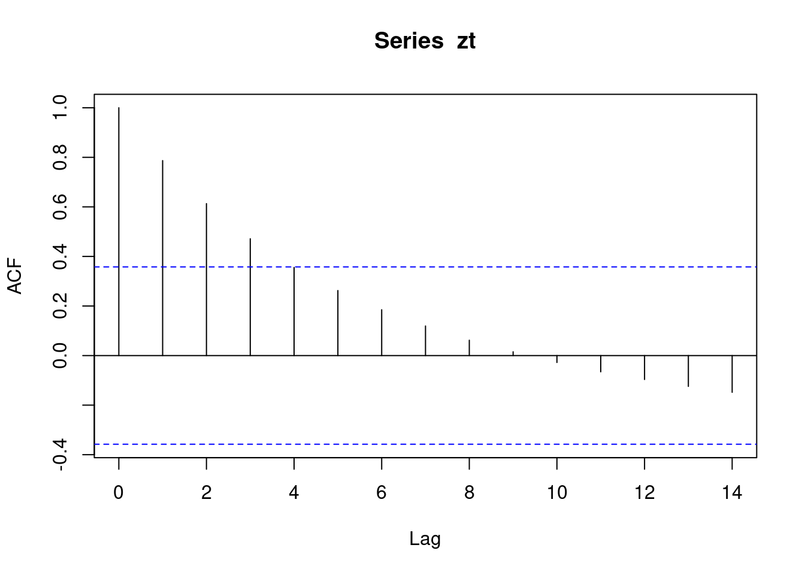
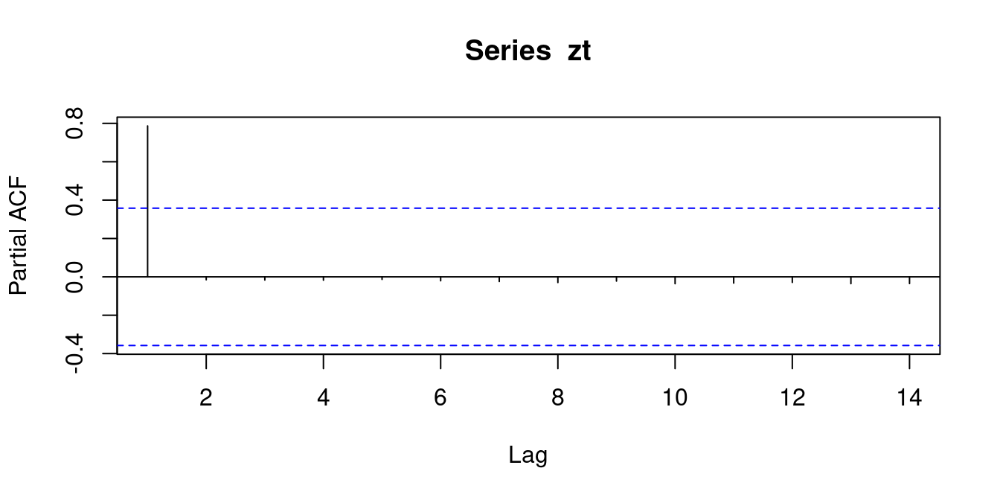
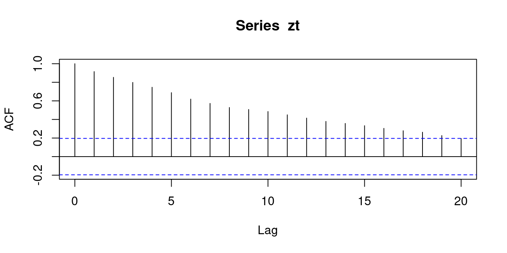
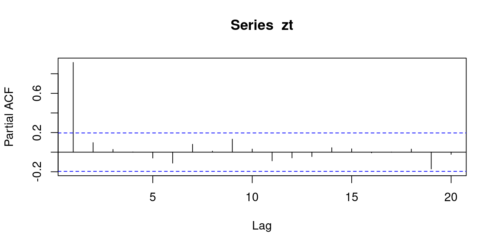

연습문제 5.3
아래와 같이 자료를 입력한다.
(a)
시계열 그림을 그려라.
(b)
(a)의 시계열로부터 \(\rho_1\)은 양수, \(0\), 혹은 음수 중 어느 값이라 기대되는가? - \(\rho_1>0\) 일 것으로 기대함.
(c)
\(Z_t\)에 대하여 \(Z_{t-1}\)의 산점도를 그려보고, 다시 \(\rho_1\)은 어느 정도의 값이 되리라 기대되는가?

yt_lag1
0.7867225 - acf의 계수값은 regression을 한 coefficient의 계수값이라고 생각해도 된다.
(d)
SACF \(\hat{\rho}_k,k=0,1,\dots,10\) 를 구하여 표본상관도표를 그려라.
, , 1
[,1]
[1,] 1.00000000
[2,] 0.78672246
[3,] 0.61310906
[4,] 0.47134840
[5,] 0.35543318
[6,] 0.26233059
[7,] 0.18488731
[8,] 0.11931704
[9,] 0.06197039
[10,] 0.01524803
[11,] -0.02785225
[12,] -0.06548592
[13,] -0.09652258
[14,] -0.12428019
[15,] -0.14821524
(e)
\(Z_t\)에 대하여 \(Z_{t-2}\)의 산점도를 그려보고, 이 그림이 (d)에서 계산된 \(\hat{\rho}_2\)에 상응하는지를 논하라.

yt_lag2
0.6131091 sacf를 구하는 방법 1
gamma_0 <- sum(yt*yt)
gamma_1 <- sum(yt*yt_lag1)
rho1 <- gamma_1/gamma_0
gamma_2 <- sum(yt*yt_lag2)
rho2 <- gamma_2/gamma_0
cat(rho1, rho2)0.7867225 0.6131091sacf를 구하는 방법 2

, , 1
[,1]
[1,] 1.00000000
[2,] 0.78672246
[3,] 0.61310906
[4,] 0.47134840
[5,] 0.35543318
[6,] 0.26233059
[7,] 0.18488731
[8,] 0.11931704
[9,] 0.06197039
[10,] 0.01524803
[11,] -0.02785225
[12,] -0.06548592
[13,] -0.09652258
[14,] -0.12428019
[15,] -0.14821524sacf를 구하는 방법 3
yt_lag1
0.7867225 yt_lag2
0.6131091 - 위에 있는 그래프의 기울기가 아래에 있는 그래프의 기울기보다 조금 더 가파르게 나타난다. (아주 미세한 차이지만..)
- 즉, yt와 lag1의 correlation이 yt와 lag2의 correlation 보다 강하다고 추측을 할 수 있다.
(f)
SPACF \(\hat{\phi}_{kk},k=1,2,\dots,10\)을 구하여 표본상관도표를 그려라.
, , 1
[,1]
[1,] 0.78672246
[2,] -0.01528120
[3,] -0.01665983
[4,] -0.01737239
[5,] -0.01327075
[6,] -0.02047259
[7,] -0.02399628
[8,] -0.02955509
[9,] -0.02187769
[10,] -0.03562721
[11,] -0.03251304
[12,] -0.02901910
[13,] -0.03540586
[14,] -0.03479451
- 파란 점선보다 작으면 \(0\)으로 봐도 무방하다.
- PACF는 Lag=1일 때를 제외하고 나머지는 절삭된다. \(\to\) Lag1은 의미있다. \(\to\) AR(1) 모델로 추정.
(g)
\(\hat{\phi}_{22}\)의 의미:
교재의 설명: \(\hat{\phi}_{22}\)는 \(Z_t\)와 \(Z_{t+2}\)로부터 \(Z_{t+1}\)의 효과를 제거한후 2시차만큼 떨어진 \(Z_t\)와 \(Z_{t+2}\)의 순수한 상관계수. (p.199)
좀더 엄밀한 정의
- partial correlation (conditional correlation)
- coefficients in the multiple regression model
- (orthogonalization) partial regression coefficients – back fitting이라고도 함.
(방법1)
lag=2에선 SPACF, 즉 \(\hat{\phi}_{22}\)는 아래와 같이 구할수 있다.
(방법2)
(방법3)
- step1: residual을 구한다.
- step2: residual끼리 regression
- step3: 적합한 모델의 coef
lm01<-lm(yt~yt_lag1)
lm21<-lm(yt_lag2~yt_lag1)
res1<-lm01$residuals
res2<-lm21$residuals
lm(res1~res2)$coefficients[2] # pacf(zt)$acf[2] res2
-0.0152812
Note
lm1$coefficient[3]: \(\phi_{21}\)lm(yt~yt_lag1)$coef[2]: \(\phi_{11}\)
연습문제 5.5
model: \(Z_t=1+0.9Z_{t-1}+\epsilon_t\), \(t=1,2,\dots,100\).
[1] 10.777675 10.660962 11.129924 10.729653 9.382788 9.291090 10.412269
[8] 9.280671 9.278990 9.050157 9.777134 9.382744 8.805521 8.574072
[15] 9.663666 10.008613 10.057641 9.088979 9.827647 10.221844 12.170445
[22] 12.868114 13.236760 12.939106 14.064829 14.689415 11.874574 10.117136
[29] 10.736236 11.427874 10.870493 11.926313 13.313631 12.119023 13.091750
[36] 11.537623 13.564257 12.867269 12.301226 12.746935 13.450774 14.667385
[43] 13.411673 15.307674 14.310807 13.122243 13.087510 11.151739 12.500317
[50] 12.134043 12.216240 13.294609 13.236690 13.206157 13.783242 12.746678
[57] 12.107156 11.286982 10.709525 10.366019 8.197414 9.075633 8.349393
[64] 9.305533 7.439775 8.190043 8.546629 8.696135 10.773879 10.591572
[71] 10.394556 10.902747 9.770263 10.122317 10.469193 9.587717 9.321004
[78] 8.713534 6.863494 8.102941 7.681025 7.309215 4.915844 5.597363
[85] 6.577784 7.037914 7.518736 6.669018 4.465009 5.514308 7.445960
[92] 6.222425 4.740820 5.294629 5.991279 5.196732 6.505054 6.643898
[99] 7.958164 9.135744(a)
(b)

, , 1
[,1]
[1,] 1.0000000
[2,] 0.9151428
[3,] 0.8532663
[4,] 0.7983751
[5,] 0.7465985
[6,] 0.6884379
[7,] 0.6189412
[8,] 0.5726526
[9,] 0.5286664
[10,] 0.5073208
[11,] 0.4852742
[12,] 0.4497323
[13,] 0.4147162
[14,] 0.3788675
[15,] 0.3569531
[16,] 0.3327448
[17,] 0.3041227
[18,] 0.2785423
[19,] 0.2625320
[20,] 0.2264291
[21,] 0.1947804(c)

, , 1
[,1]
[1,] 0.915142832
[2,] 0.097099164
[3,] 0.027803130
[4,] 0.002343684
[5,] -0.060069904
[6,] -0.111745287
[7,] 0.080637070
[8,] 0.010304596
[9,] 0.132408979
[10,] 0.031574334
[11,] -0.088386730
[12,] -0.058457746
[13,] -0.044925052
[14,] 0.045494186
[15,] 0.033808509
[16,] -0.006926641
[17,] 0.001553929
[18,] 0.031117106
[19,] -0.171366229
[20,] -0.022407217